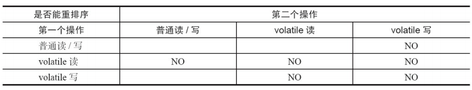
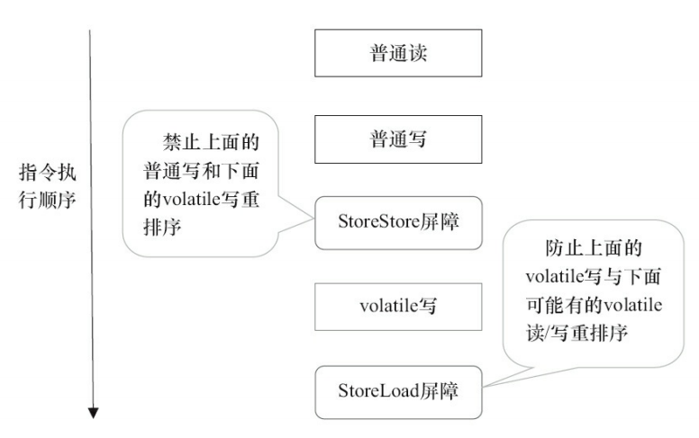
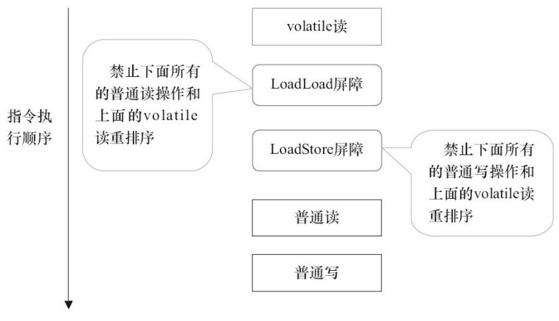
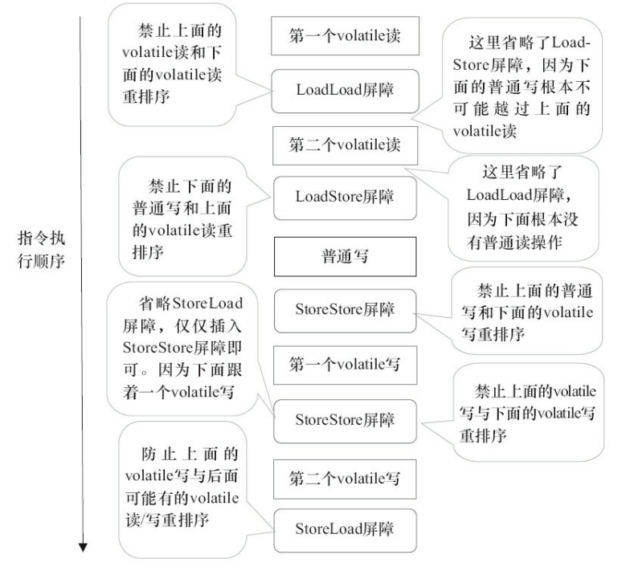
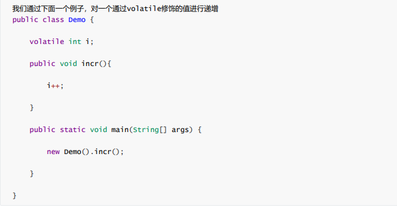

volatile如何保证可见性
volatile变量修饰的共享变量，在进行写操作的时候会多出一个lock前缀的汇编指令，这个指令在前面我们讲解 CPU 高速缓存的时候提到过，会触发总线锁或者缓存锁，通过缓存一致性协议来解决可见性问题。 对于声明了volatile的变量进行写操作，JVM就会向处理器发送一条Lock前缀的指令，把这个变量所在的缓存行的数据写回到系统内存，每个处理器通过嗅探在总线上传播的数据来检查自己缓存的值是否已过期，当发现自己缓存行对应的内存地址被修改，就会将当前处理器的缓存行设置成无效状态。
如下JMM针对编译器制定的volatile重排序规则表：

举例来说，第三行最后一个单元格的意思是：在程序中，当第一个操作为普通变量的读或写时，如果第二个操作为volatile写，则编译器不能重排序这两个操作。 我们可以看出： · 当第二个操作是volatile写时，不管第一个操作是什么，都不能重排序。这个规则确保 volatile写之前的操作不会被编译器重排序到volatile写之后。 · 当第一个操作是volatile读时，不管第二个操作是什么，都不能重排序。这个规则确保 volatile读之后的操作不会被编译器重排序到volatile读之前。 · 当第一个操作是volatile写，第二个操作是volatile读时，不能重排序。 为了实现volatile的内存语义，编译器在生成字节码时，会在指令序列中插入内存屏障来禁止特定类型的处理器重排序。对于编译器来说，发现一个最优布置来最小化插入屏障的总数几乎不可能。为此，JMM采取保守策略。下面是基于保守策略的JMM内存屏障插入策略： 在每个volatile写操作的前面插入一个StoreStore屏障。 · 在每个volatile写操作的后面插入一个StoreLoad屏障。 · 在每个volatile读操作的后面插入一个LoadLoad屏障。 · 在每个volatile读操作的后面插入一个LoadStore屏障。 上述内存屏障插入策略非常保守，但它可以保证在任意处理器平台，任意的程序中都能得到正确的volatile内存语义。 下面是保守策略下，volatile写插入内存屏障后生成的指令序列示意图：

图中的StoreStore屏障可以保证在volatile写之前，其前面的所有普通写操作已经对任意处理器可见了。这是因为StoreStore屏障将保障上面所有的普通写在volatile写之前刷新到主内存。 这里比较有意思的是，volatile写后面的StoreLoad屏障。此屏障的作用是避免volatile写与后面可能有的volatile读/写操作重排序。因为编译器常常无法准确判断在一个volatile写的后面是否需要插入一个StoreLoad屏障（比如，一个volatile写之后方法立即return）。 为了保证能正确实现volatile的内存语义，JMM有两种策略： 1、在每个volatile写的后面插入一个StoreLoad屏障， 2、在每个volatile 读的前面插入一个StoreLoad屏障。 从整体执行效率的角度考虑，JMM最终选择了在每个 volatile写的后面插入一个StoreLoad屏障。因为volatile写-读内存语义的常见使用模式是：一个 写线程写volatile变量，多个读线程读同一个volatile变量。当读线程的数量大大超过写线程时， 选择在volatile写之后插入StoreLoad屏障将带来可观的执行效率的提升。从这里可以看到JMM 在实现上的一个特点：首先确保正确性，然后再去追求执行效率。

上图中的LoadLoad屏障用来禁止处理器把上面的volatile读与下面的普通读重排序。 LoadStore屏障用来禁止处理器把上面的volatile读与下面的普通写重排序。 在实际执行时，只要不改变 volatile写-读的内存语义，编译器可以根据具体情况省略不必要的屏障。

最后的StoreLoad屏障不能省略。因为第二个volatile写之后，方法立即return。此时编译器可能无法准确断定后面是否会有volatile读或写，为了安全起见，编译器通常会在这里插入一个StoreLoad屏障。 上面的优化针对任意处理器平台，由于不同的处理器有不同“松紧度”的处理器内存模 型，内存屏障的插入还可以根据具体的处理器内存模型继续优化。如果硬件架构本身已经保证了内存可见性，那么volatile就是一个空标记，不会插入相关语义的内存屏障。如果硬件架构本身不进行处理器重排序，有更强的重排序语义，那么volatile就是一个空标记，不会插入相关语义的内存屏障。
volatile如何保证有序性
volatile为什么不能保证原子性
对任意单个volatile变量的读写具有原子性，但类似于volatile++这种复合操作不具有原子性

然后通过javap -c Demo.class，去查看字节码 对一个原子递增的操作，会分为三个步骤： 1.读取volatile变量的值； 2.增加变量的值； 3.回写变量的值。